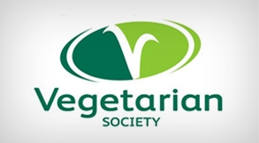
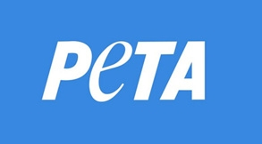
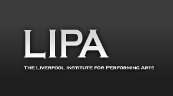
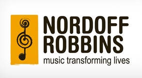

Causes
Animal Freedom
Meat Free Monday
Font: Paul McCartney Official Website
Launched by Paul and his daughters Mary and Stella McCartney on Monday 15th June 2009, Meat Free Monday is a not-for-profit campaign which aims to raise awareness of the detrimental environmental impact of eating meat, and to encourage people to help slow climate change, preserve precious natural resources and improve their health by having at least one meat free day each week. The campaign has already gathered an impressive list of supporters from the worlds of entertainment, politics and the environmental sciences.
The Vegetarian Society
Font: Paul McCartney Official Website
 The Vegetarian Society works to reduce suffering and help create a more compassionate society by encouraging, supporting and persuading people to become and remain vegetarian. Building public awareness through education and campaigning, The Vegetarian Society highlights the benefits of a vegetarian diet to the environment and human wellbeing, as well as the welfare of animals.
Peta
Font: Paul McCartney Official Website

People for the Ethical Treatment of Animals (PETA), with more than 1.8 million members and supporters, is the largest animal rights organization in the world. PETA focuses its attention on the four areas in which the largest numbers of animals suffer the most intensely for the longest periods of time: for the table, in laboratories, in the clothing trade, and in the entertainment.
Music and Art Promotion
Lipa
Font: Paul McCartney Official Website
 LIPA is a university level institute combining performance, technical innovation, business awareness, understanding and intellectual development; the aim is to train people passionate about arts and entertainment for a sustained career. The curriculum is holistic. Students are expected to be multi-skilled and while perfecting proficiency in their chosen discipline, understand others. Three years after leaving, roughly 80% of graduates traced are still working in the performing arts.
The OneVoice Movement
Font: Paul McCartney Official Website
OneVoice is a grassroots movement of Israeli and Palestinian citizens and international supporters who are fed up with the ongoing Israeli-Palestinian conflict and who are ready and eager to support a serious peace process, leading to a comprehensive agreement that will fulfil the hopes and beliefs of both the Palestinian and Israeli people to end occupation and all forms of violence and establish a two state solution. What makes OneVoice unique is that it appeals to the national self interest of both peoples. They don't ask each-side to like or love each other; rather they ask them to recognise the entangled nature of their fates, and the need to address the concerns on each side so that they can fulfill their respective moderate national ambitions.
Nordoff-Robbins Music Therapy
Font: Paul McCartney Official Website
 Nordoff-Robbins Music Therapy builds on the knowledge that everyone - no matter how ill, disabled or traumatised - can respond to music. Music therapists can use music to help people from any age with a wide range of needs.